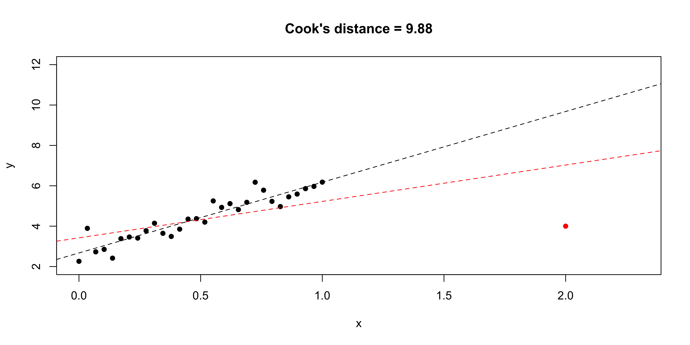
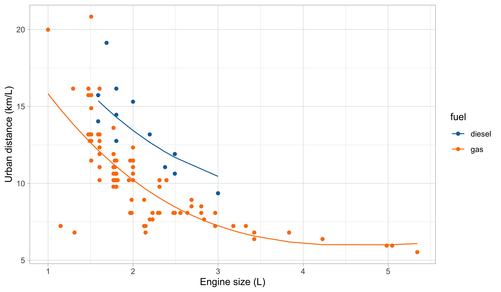

Linear models and misspecification
Statistics III - CdL SSE
Tommaso Rigon
Università degli Studi di Milano-Bicocca
Homepage
 “Everything should be made as simple as possible, but not simpler”
“Everything should be made as simple as possible, but not simpler”
Attributed to Albert Einstein
This unit will cover the following topics:
- Recap: linear models and the modeling process
- Box-Cox transform, variance stabilizing transformations
- Robustness of OLS estimates, sandwich estimators
- Weighted least squares
The main theme is: what should we do when the assumptions of linear models are violated?
We will push the linear model to its limit, using it even when is not supposed to work.
Old friends: linear models
Car data (diesel or gas)
- We consider data for n = 203 models of cars in circulation in 1985 in the USA.
- We want to predict the distance per unit of fuel as a function of the vehicle features.
- We consider the following variables:
- The city distance per unit of fuel (km/L,
city.distance) - The engine size (L,
engine.size) - The number of cylinders (
n.cylinders) - The curb weight (kg,
curb.weight) - The fuel type (gasoline or diesel,
fuel).
- The city distance per unit of fuel (km/L,
Linear regression

Let us consider the variables
city.distance(y),engine.size(x) andfuel(z).A simple linear regression Y_i = \beta_1 + \beta_2 x_i + \epsilon_i, \qquad i=1,\dots,n, could be easily fit by least squares…
… but the plot suggests that the relationship between
city.distanceandengine.sizeis not well approximated by a linear function.… and also that
fuelhas a non-negligible effect on the response.
Regression models
A general and more flexible formulation for modeling the relationship between a vector of fixed covariates \bm{x}_i = (x_{i1},\dots,x_{ip})^T \in \mathbb{R}^p and a random variable Y_i \in \mathbb{R} is Y_i = f(\bm{x}_i; \beta) + \epsilon_i, \qquad i=1,\dots,n, where the “errors” \epsilon_i are iid random variables, having zero mean and variance \sigma^2.
To estimate the unknown parameters \beta, a possibility is to rely on the least squares criterion: we seek the minimum of the objective function D(\beta) = \sum_{i=1}^n\{y_i - f(\bm{x}_i; \beta)\}^2, using n pairs of covariates \bm{x}_i = (x_{i1},\dots,x_{ip})^T and the observed realizations y_i of the random variables Y_i, for i = 1,\dots,n. The optimal value is denoted by \hat{\beta}.
The predicted values are \hat{y}_i = \mathbb{E}(Y_i) = f(\bm{x}_i; \hat{\beta}), for i=1,\dots,n.
Linear models
Let us consider again the variables
city.distance(y),engine.size(x) andfuel(z).Which function f(x,z;\beta) should we choose?
- A first attempt is to consider a polynomial term combined with a dummy variable f(x, z; \beta) = \beta_1 + \beta_2 x + \beta_3 x^2 + \beta_4 x^3 + \beta_5 I(z = \texttt{gas}), which is a special instance of linear model.
Definition (Linear model)
In a linear model the response variable Y_i is related to the covariates through the function \mathbb{E}(Y_i) =f(\bm{x}_i; \beta) = \beta_1 x_{i1} + \cdots + \beta_p x_{ip} =\bm{x}_i^T\beta, where \bm{x}_i = (x_{i1},\dots,x_{ip})^T is a vector of covariates and \beta = (\beta_1,\dots,\beta_p)^T is the corresponding vector of coefficients.
Matrix notation
The response random variables are collected in the random vector \bm{Y} = (Y_1,\dots,Y_n)^T, whose observed realization is \bm{y} = (y_1,\dots,y_n)^T.
The design matrix is a n \times p matrix, comprising the covariate’s values, defined by \bm{X} = \begin{bmatrix} x_{11} & \cdots & x_{1p}\\ \vdots & \ddots & \vdots \\ x_{n1} & \cdots & x_{np} \end{bmatrix}.
- The jth variable (column) is denoted with \tilde{\bm{x}}_j, whereas the ith observation (row) is \bm{x}_i: \bm{X} = (\tilde{\bm{x}}_1,\dots,\tilde{\bm{x}}_p) = (\bm{x}_1, \dots,\bm{x}_n)^T.
- Then, a linear model can be written using the compact notation: \bm{Y} = \bm{X}\beta + \bm{\epsilon}, where \bm{\epsilon} = (\epsilon_1,\dots,\epsilon_n)^T is a vector of iid error terms with zero mean and variance \sigma^2.
Linear regression: estimation I
- The optimal set of coefficients \hat{\beta} is the minimizer of the least squared criterion D(\beta) = (\bm{y} - \bm{X}\beta)^T(\bm{y} - \bm{X}\beta) = ||\bm{y} - \bm{X}\beta||^2, also known as residual sum of squares (RSS), where ||\bm{y}|| = \sqrt{y_1^2 + \cdots + y_n^2}, denotes the Euclidean norm.
Least square estimate (OLS)
If the design matrix has full rank, that is, if \text{rk}(\bm{X}^T\bm{X}) = p, then the least square estimate has an explicit solution: \hat{\beta} = (\bm{X}^T\bm{X})^{-1}\bm{X}^T \bm{y}.
Linear regression: estimation II
In matrix notation, the predicted values can be obtained as \hat{\bm{y}} = \bm{X}\hat{\beta} = \bm{H}\bm{y}, \qquad \bm{H} = \bm{X}(\bm{X}^T\bm{X})^{-1}\bm{X}^T.
\bm{H} is a n \times n projection matrix matrix sometimes called hat matrix.
It can be shown that \text{tr}(\bm{H}) = \text{rk}(\bm{H}) = p. Moreover, it holds \bm{H} = \bm{H}^T and \bm{H}^2 = \bm{H}.
The quantity D(\hat{\beta}) is the so-called deviance, which is equal to D(\hat{\beta}) = ||\bm{y} - \hat{\bm{y}}||^2 = \bm{y}^T(I_n - \bm{H})\bm{y}.
Moreover, a typical estimate for the residual variance \sigma^2 is obtained as follows: s^2 = \frac{D(\hat{\beta})}{n - p} = \frac{1}{n-p}\sum_{i=1}^n(y_i - \bm{x}_i^T\hat{\beta})^2.
Linear regression: inference
Let us additionally assume that the errors follow a Gaussian distribution: \epsilon_i \overset{\text{iid}}{\sim} N(0, \sigma^2).
This implies that the distribution of the estimator \hat{\beta} is \hat{\beta} \sim \text{N}_p(\beta, \sigma^2 (\bm{X}^T\bm{X})^{-1}).
Hence, the estimator \hat{\beta} is unbiased and its variance can be estimated by \widehat{\text{var}}(\hat{\beta}) = s^2 (\bm{X}^T\bm{X})^{-1}.
The standard errors of the components of \hat{\beta} correspond to the square root of the diagonal of the above covariance matrix.
- Confidence interval and Wald’s tests can be obtained through classical inferential theory.
- Ok, we are ready to get back to the original problem…
Car data, a first model
Our first attempt for predicting
city.distance(y) viaengine.size(x) andfuel(z) is: f(x, z; \beta) = \beta_1 + \beta_2 x + \beta_3 x^2 + \beta_4 x^3 + \beta_5 I(z = \texttt{gas}).Indeed, by looking at the plot of the data, it is plausible that we need a polynomial of degree 3 or 4
It is also clear from the plot that
fuelis a relevant variable. Categorical variables are encoded using indicator variables.
- To evaluate the goodness of fit, we can calculate the coefficient of determination: R^2 = 1 - \frac{\text{(``Residual deviance'')}}{\text{(``Total deviance'')}} = 1 - \frac{\sum_{i=1}^n (y_i - \hat{y}_i)^2}{\sum_{i=1}^n(y_i - \bar{y})^2}.
A first model: estimated coefficients
- We obtain the following summary for the regression coefficients \hat{\beta}.
| term | estimate | std.error | statistic | p.value |
|---|---|---|---|---|
(Intercept) |
28.045 | 3.076 | 9.119 | 0.000 |
engine.size |
-10.980 | 3.531 | -3.109 | 0.002 |
engine.size^2 |
2.098 | 1.271 | 1.651 | 0.100 |
engine.size^3 |
-0.131 | 0.139 | -0.939 | 0.349 |
fuel_gas |
-3.214 | 0.427 | -7.523 | 0.000 |
- Moreover, the coefficient R^2 and the residual standard deviation s are:
| r.squared | sigma | deviance |
|---|---|---|
| 0.5973454 | 1.790362 | 634.6687 |
A first model: fitted values
A first model: graphical diagnostics
Linear models and non-linear patterns
- A significant advantage of linear models is that they can describe non-linear relationships via variable transformations such as polynomials, logarithms, etc.
- This gives the statistician a lot of modeling flexibility. For instance, we could let: \log{Y_i} = \beta_1 + \beta_2 \log{x_i} + \beta_3 I(z_i = \texttt{gas}) + \epsilon_i, \qquad i=1,\dots,n.
- This specification is linear in the parameters, it fixes the domain issues, and it imposes a monotone relationship between engine size and consumption.
| term | estimate | std.error | statistic | p.value |
|---|---|---|---|---|
(Intercept) |
3.060 | 0.047 | 64.865 | 0 |
log(engine.size) |
-0.682 | 0.040 | -17.129 | 0 |
fuel_gas |
-0.278 | 0.038 | -7.344 | 0 |
Second model: fitted values

Second model: graphical diagnostics

Comments and criticisms
- The goodness of fit indices are the following:
| r.squared.original | r.squared | sigma | deviance |
|---|---|---|---|
| 0.5847555 | 0.6196093 | 0.1600278 | 5.121777 |
- Do not mix apple and oranges! Compare R^2s only if they refer to the same scale!
This second model is more parsimonious, and yet it reaches satisfactory predictive performance.
It is also more coherent with the nature of the data: the predictions cannot be negative, and the relationship between engine size and the consumption is monotone.
Yet, there is still some heteroscedasticity in the residuals — is this is due to a missing covariate that has not been included in the model?
A third model: additional variables
Let us consider two additional variables:
curb.weight(w) andn.cylinders(v).A richer model, therefore, could be: \log{Y_i} = \beta_1 + \beta_2 \log{x_i} + \beta_3 \log{w_i} + \beta_4 I(z_i = \texttt{gas}) + \beta_5 I(v_i = 2) + \epsilon_i, for i=1,\dots,n. The estimates are:
| term | estimate | std.error | statistic | p.value |
|---|---|---|---|---|
(Intercept) |
9.423 | 0.482 | 19.549 | 0.000 |
log(engine.size) |
-0.180 | 0.051 | -3.504 | 0.001 |
log(curb.weight) |
-0.943 | 0.072 | -13.066 | 0.000 |
fuel_gas |
-0.353 | 0.022 | -15.934 | 0.000 |
cylinders2_TRUE |
-0.481 | 0.052 | -9.301 | 0.000 |
A third model: graphical diagnostics

Comments and criticisms
- The goodness of fit greatly improved:
| r.squared.original | r.squared | sigma | deviance |
|---|---|---|---|
| 0.869048 | 0.8819199 | 0.0896089 | 1.589891 |
In this third model, we handled the outliers appearing in the residual plots, which it turns out are identified by the group of cars having 2 cylinders.
The diagnostic plots are also very much improved, although still not perfect.
The estimates are coherent with our expectations, based on common knowledge. Have a look at the textbook (A&S) for a detailed explanation of \beta_4!
The car dataset is available from the textbook (A&S) website:
- Dataset http://azzalini.stat.unipd.it/Book-DM/auto.dat
- Variable description http://azzalini.stat.unipd.it/Book-DM/auto.names
Misspecification and remedies
Assumptions and misspecification
Classical assumptions of a linear model
(A.1) Linear structure, namely \bm{Y} = \bm{X}\beta + \bm{\epsilon} with \mathbb{E}(\bm{\epsilon}) = 0, implying \mathbb{E}(\bm{Y}) = \bm{X}\beta. 1
(A.2) Homoschedasticity and uncorrelation of the errors, namely \text{var}(\bm{\epsilon}) = \sigma^2 I_n.
(A.3) Gaussianity, namely \bm{\epsilon} \sim \text{N}_n(0, \sigma^2 I_n). In other words, the errors \epsilon_i \overset{\text{iid}}{\sim}N(0, \sigma^2) are iid Gaussian random variables with zero mean and variance \sigma^2.
It is also commonly asked that \text{rk}(\bm{X}) = p, otherwise the model is not identifiable.
- If one of the above assumptions is violated, it is not necessarily a huge problem, because
- the OLS estimator \hat{\beta} is fairly robust to misspecification;
- simple fixes (variable transformations, standard error corrections) are available.
Robust estimation and assumptions

A plane can still fly with one of its engines on fire, but this is hardly an appealing situation.
Similarly, robust estimators may work under model misspecification, but this does not mean we should neglect checking whether the original assumptions hold.
Variable transformations
- The first remedy for misspecification was implicitly applied in the analysis of the car dataset, namely through variable transformation.
While the model may have been incorrectly specified for the original data, it could become appropriate once the transformations are considered, namely g(Y_i) = h_1(\bm{x}_i)\beta_1 + \cdots + h_p(\bm{x}_i)\beta_p + \epsilon_i, \qquad i=1,\dots,n, where g(\cdot) and h_j(\cdot) for j=1,\dots,p are non-linear and known functions.
This idea is conceptually simple and powerful. It also shows that linear models are capable of capturing non-linear relationships, as long as they remain linear in the parameters.
However, choosing g(\cdot) and h_j(\cdot) in practice is not simple. In our case study, we proceeded by trial and error and used contextual information to guide our final choice.
- Regarding the functions h_j(\cdot), polynomial terms are a simple and common option. More advanced approaches based on splines will be discussed in Data Mining.
Variance stabilizing transformations I
Let Y_i \sim \text{Poisson}(\mu_i) with mean \mathbb{E}(Y_i) = \mu_i = f(\bm{x}_i;\beta) = \text{var}(Y_i). Note that Y_i \,\dot{\sim}\, \text{N}(\mu_i, \mu_i), is asymptotically Gaussian for large values of \mu_i. However, data are heteroschedastic.
In modeling count data, we could transform the counts so that, at least approximately, the variance of g(Y_i) is constant and ordinary least squares methods can be used.
- As an application of the delta method, the following linearization holds g(Y_i) - g(\mu_i) \approx (Y_i - \mu_i)g'(\mu_i), \quad \text{ which implies }\quad \text{var}\{g(Y_i)\} \approx g'(\mu_i)^2\text{var}(Y_i). In the Poisson case \text{var}\{g(Y_i)\} \approx \mu_i \,g'(\mu_i)^2 and we would like this to be constant.
- The choice g(y) = \sqrt{y}, called variance stabilizing transformation, gives \text{var}(\sqrt{Y_i}) \approx \left(\frac{1}{2\sqrt{\mu_i}}\right)^2\mu_i = \frac{1}{4}.
Variance stabilizing transformations II
Let Y_i \sim \text{Binomial}(\pi_i, n_i), with success probability \pi_i = f(\bm{x}_i; \beta) and trials n_i. For large values of n_i, the Gaussian approximation holds Y_i \,\dot{\sim}\, \text{N}(n_i \pi_i, n_i\pi_i(1 - \pi_i)). However, the data are heteroschedastic, because \text{var}(Y_i) = n_i \pi_i(1- \pi_i).
Thus, a variance stabilizing transformation in this case is g_{n_i}(y) = \sqrt{n_i}\arcsin\left(\frac{2 y}{n_i} - 1\right), because in fact we have that \text{var}(g_{n_i}(Y_i)) \approx \left(\frac{\sqrt{n_i}}{\sqrt{1 - (2\pi_i-1)^2}} \frac{2}{n_i}\right)^2 n_i \pi_i(1- \pi_i) = 1.
- If the data are gamma distributed, the variance stabilizing transform is g(y) = \log{y}.
Box-Cox transform
If the data are y_i are positive, we may consider a parametric class of transformations: g_\lambda(y) = \frac{y^\lambda - 1}{\lambda}, \qquad \lambda \neq 0. and g_\lambda(y) = \log{y} when \lambda = 0. This is the celebrated Box-Cox transform.
The case \lambda = 1 corresponds to no transformation, \lambda= 1/2 to the square root, \lambda = 0 to the logarithm, and \lambda= −1 to the reciprocal.
The main idea is to estimate \lambda from the data using maximum likelihood, so that the data themselves can inform us about the best transformation. We assume g_\lambda(Y_i) = \bm{x}_i^T\beta + \epsilon_i, \qquad \epsilon_i \sim \text{N}(0, \sigma^2), \qquad i=1,\dots,n.
The aim of the transformation is to produce a response for which the variance of \epsilon_i is constant with an approximately normal distribution.
Profile likelihood for \lambda: derivation I
The distribution of the transformed data \bm{Y}(\lambda) = (g_\lambda(Y_1), \dots,g_\lambda(Y_n))^T is Gaussian: f(\bm{y}(\lambda)) = \frac{1}{(2\pi\sigma^2)^{n/2}}\exp\left\{-\frac{1}{2\sigma^2}(\bm{y}(\lambda) - \bm{X}\beta)^T(\bm{y}(\lambda) - \bm{X}\beta)\right\}.
The density of the original data is f_Y(\bm{y}) = f(\bm{y}(\lambda))\prod_{i=1}^ny_i^{\lambda - 1} after accounting for the Jacobian of the transformation.
The log-likelihood therefore is \ell(\beta, \sigma^2, \lambda) = -\frac{n}{2}\log{\sigma^2} - \frac{1}{2\sigma^2}(\bm{y}(\lambda) - \bm{X}\beta)^T(\bm{y}(\lambda) - \bm{X}\beta) + (\lambda - 1)\sum_{i=1}^n\log{y_i}.
Note that, for any given value of \lambda, the maximum likelihood estimates are \hat{\beta}(\lambda) = (\bm{X}^T\bm{X})^{-1}\bm{X}^T\bm{y}(\lambda), \qquad \hat{\sigma}^2(\lambda) = \frac{1}{n}(\bm{y}(\lambda) - \bm{X}\hat{\beta}(\lambda))^T(\bm{y}(\lambda) - \bm{X}\hat{\beta}(\lambda)),
Profile likelihood for \lambda: derivation II
The profile log-likelihood for \lambda admits a very simple expression, namely \ell_P(\lambda) = \ell(\hat{\beta}(\lambda), \hat{\sigma}^2(\lambda), \lambda) = -\frac{n}{2}\log{\hat{\sigma}^2(\lambda)} + (\lambda -1)\sum_{i=1}^n\log{y_i}, which must be numerically maximized over \lambda, e.g. using
optim.The optimal value \hat{\lambda} = \arg\max\ell_P(\lambda), as well as a confidence interval for it, may offer guidance in choosing the right transformation.
Note that Box and Cox themselves suggested using this approach as an exploratory tool, rather than a formal inferential procedure.
For instance,the optimal value \hat{\lambda} = 0.4210283 may be hard to interpret but it could be an indication that a square root transformation is appropriate.
Box-Cox transform for the auto dataset

- The Box-Cox transform in the auto dataset suggests a reciprocal transformation: \frac{1}{Y_i} = \beta_1 + \beta_2 x_i + \beta_3 w_i + \beta_4 I(z_i = \texttt{gas}) + \beta_5 I(v_i = 2) + \epsilon_i, which is a good alternative to our model based on logarithms of y_i, x_i, and w_i (but…).
A fourth model: graphical diagnostics

Variable transformation: a caveat
In the case of transformations applied only to the explanatory variables, the model is Y_i = h_1(\bm{x}_i)\beta_1 + \cdots + h_p(\bm{x}_i)\beta_p + \epsilon_i, \qquad i=1,\dots,n, Thus, the coefficients can no longer be interpreted as the change in the mean of Y_i corresponding to a one-unit increase in \tilde{\bm{x}}_j, independently of the starting level.
In the case of transformations of the response variable we let \mathbb{E}(g(Y_i)) = \bm{x}_i^T\beta. However:
E(g(Y_i)) \neq g(\mathbb{E}(Y_i)) \quad \Longrightarrow \quad \mathbb{E}(Y_i) \neq g^{-1}(\bm{x}_i^T\beta).
Thus \hat{y}_i = g^{-1}(\bm{x}_i^T\hat{\beta}) is a reasonable prediction for Y_i and not an estimate for its mean.
When g(y) = \log{y} this difference can be made explicit, because we have g^{-1}(\mathbb{E}\{g(Y_i)\}) = g^{-1}(\bm{x}_i^T\beta) = \exp(\bm{x}_i^T\beta), \qquad \mathbb{E}(Y_i) = \exp(\bm{x}_i^T\beta + \sigma^2/2), the former being the geometric mean of Y_i, whereas the latter is the usual mean.
Robustness of the OLS estimator
Non-normality of the errors I
Let us consider the case in which assumptions (A.1)-(A.2) are valid but (A.3) is not, that is \mathbb{E}(\bm{\epsilon}) = 0 and \text{var}(\bm{\epsilon}) = \sigma^2 I_n, but \epsilon does not follow a Gaussian distribution.
For example, \epsilon_i may follow a Laplace distribution, a skew-Normal, a logistic distribution, a Student’s t distribution, etc.
The OLS estimate \hat{\beta} is not anymore the maximum likelihood estimator, but it preserves most of its properties and a geometric interpretation.
In particular, even without normality of the errors (A.3) we obtain the usual formulas: \mathbb{E}(\hat{\beta}) = \beta, \qquad \text{var}(\hat{\beta}) = \sigma^2(\bm{X}^T\bm{X})^{-1}.
Moreover, the OLS \hat{\beta} remains the most efficient estimator within the class of linear and unbiased estimators (BLUE) for any distribution of the errors \bm{\epsilon}.
In fact, the proof of the Gauss-Markov theorem requires (A.1)-(A.2) but not (A.3).
Non-normality of the errors II
When the errors are non Gaussian the exact inferential results are not valid. In particular \hat{\beta} does not follow anymore a Gaussian distribution.
However, a central limit theorem can be invoked under very mild conditions on the design matrix \bm{X}.
Thus, when the sample size n is large enough, then the following approximation holds \hat{\beta} \:\dot{\sim}\: \text{N}_p(\beta, \sigma^2(\bm{X}^T\bm{X})^{-1}), from which confidence intervals and test statistics can be obtained as usual. The approximation is excellent if the errors are symmetric around 0.
Non-normality of the errors is not a major concern: the OLS estimator preserves most of its properties, including approximate normality for sufficiently large n.
There is often an over-emphasis on testing whether the residuals are Gaussian. However, even if normality is rejected, the practical implications are minimal.

Comments and criticisms
Is this a good model?
The overall fit seems satisfactory at first glance, especially if we aim at predicting the urban distance of cars when average engine size (i.e., between 1.5L and 3L).
Also, this model is unsuitable for extrapolation. Indeed:
It is plausible that we can find a better one, so what’s next?